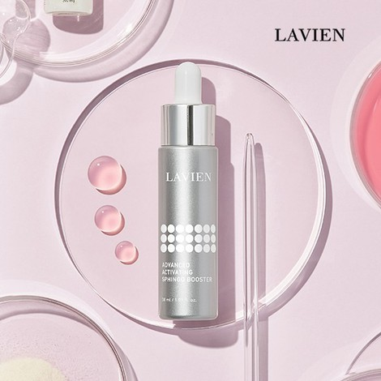
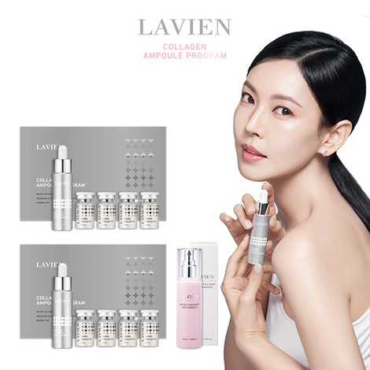
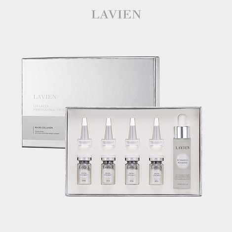
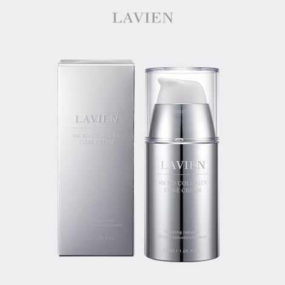
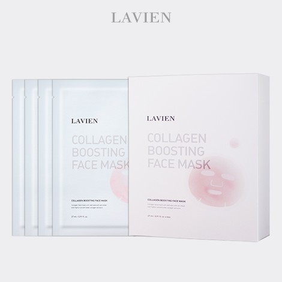

하이2
- 
- 
- 
- 
탭 콘텐츠(tab_contents) : 제한된 공간 안에서 메뉴를 클릭시 해당 영역 안에서만 콘텐츠 내용이 보이도록 하는 콘텐츠 제작 방식이며, 여러 개의 메뉴를 통해 다양한 내용을 보여줄 수 있다는 장점이 있다.
css로는 라디오버튼을 통해 제작이 가능하며, javascript에서는 반복문을 통해 제작이 가능하다. 또한 jQuery에서는 '문서객체조작'메서드를 통해 제작이 가능해서 어떤 언어로 사용해도 모두 가능하다.
이미지 5장을 사용하여 썸네일 이미지 클릭시 해당 사진 보여주기